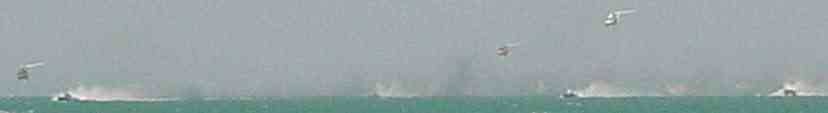

11 December 1999
Kia ora! Whakatau.
Me again. I've finally finished my
latest update... Well, not quite true. I've finally stopped amending my latest update. Things keep happening at a
rate too quick to keep up with. I've missed out heaps, but here is a few
snippets of the latest happenings...
Dubai, United Arab Emirates.
Well, I landed okay. No major problems
there. I have decided I don't like travelling east though. My body likes travelling west. My body clock
is always a couple of
hours west of wherever I am, so travelling west makes sense. (That explains my tendencies
to sleep in and stay up late. Or maybe that's just because I'm lazy?) It took me a
couple of days to adjust here. Not helped by the fact that I still
hadn't gotten over that flu I had in London. Dammit!
Hotels on the Beach.
After getting here, Will, Andy and I went for a bit
of a cruise down and along the Beach for a bit of a look around. Nothing but
palaces and hotels for miles along the beach. All of them have private beaches,
and you (normally) have to be a guest to get access to
the sand. Apparently the old ruler of Dubai wanted the beaches kept free for the public, but once
he died his sons got into the Beach-Hotel Development market. Now you have to
go a fair way to find a spot you don't have to pay for...
The
Jumeira Beach Tower hotel (left), and the Jumeira Beach hotel (right). The
building on the right is BIG , yet it is
dwarfed by the Jumeira Beach Tower hotel. The light show at night is
particularly cheesy. (but worth a look)
Golden Sands 7.
The apartment we've got is not bad. Lovely big rooms, and the air-conditioning is a nice respite from the scorching heat outside. (although it is getting
much cooler now winter is arriving, almost down to the high twenties!)
My favourite feature of
this place is the swimming pool on the roof. I've try to go for a swim most days.
I love it.
Quake-Fest.
There was sort of a Quake-fest thing running here
the first 'weekend' I got here. (My weekends being Thursday and Friday in the
UAE)
I signed up for a bit of a laugh, and finished 5th overall.
Not a bad effort I reckon. I ended up winning some flash 32meg video card, which
would be great, if only I had a PC to put it in. (May have to go out and buy
one now) The other 9 guys in the final were all very good, so I
was pretty chuffed to come fifth. There were only around 160 entrants in all, so it wasn't a huge
event.
Insane Taxi ride.
Before I left London, I had the most amazing taxi
ride. I think it qualifies for the ride from hell.
I had
spent the night at The Syndrome (Some nightclub-type place out near Willesden Green) with John
Harrison
.
After the place closed I had to find a way home. No Black cabs around, so it was
mini-cab time. Anyway, I met this guy walking along the sidewalk and asked him
where I could find a mini-cab. He said he was a mini-cab driver, so off we went
to get his cab. We had to walk a long way, and he started
telling me how somebody broke his window that night.
We get to his
car, and sure enough, the passenger's window is broken. So I get in the back,
and off we go to Hanger Lane. (home for me)
To be honest, he wasn't a bad
driver. But he kept having these involuntary spasms which caused him to flick
his head down until his chin touched his chest. (Not confidence
inspiring)
We get to Hanger Lane roundabout, and the car stalls. He
says "Sorry about this mister", and then restarts the car. I hadn't noticed
until now that the ignition was hotwired. (Yes, it gets worse) I get him to stop
outside McDonalds. (I'm not going to let him see where I live) then he tries to
sell me an answer phone. Me, being particularly thick, ask 'what sort of answer phone?'. Then out of his jacket he pulls this
answer phone, and wants to
know if I'll buy it for £10. Things are looking very suss', then he tells me if
there is anything I want, he can get it.
Needless to say, I got out of there
pretty damn quick.
Driving around Dubai.
And I thought Russian taxi drivers were bad
enough! I still haven't found the brand of cereal that locals find their drivers-licenses in. My residence visa has
come through, so after doing a visa run to Doha, I'm hoping
to go get my Dubai licence soon. Unfortunately that means I'll also have to start driving
like a maniac, with utter disregard for human life.
I've been driving around though (on my International licence), and
it's been great. I'd gone for 6 months without driving at all (apart from once
in London). So it was a real boost once I started here.
Still, the benefits of independence, may
be overrated as most drivers
here are attempting
to kill everyone else, so the rest of the time I either taxi or walk.
It's not really possible to walk around Dubai without hearing the mating-call of lurking taxis. Just because I'm white, and it's warm, they expect me to catch a taxi down to the shops. Go figure... Then again, it's not typical to walk around here. It's difficult to cross the road (up to 6 lanes in a lot of places) as most drivers seem to accelerate when they see you crossing. (I must be worth 50 points or something)
Would the real Mr David Peer please stand
up.
Nope, that's not a typo. I am Mr David Peer. In the Arab circles
here I can't have the surname Beer, so I am officially know as Mr David Peer.
I'm hoping it means I can get out of paying for all of Mr Peer's accounts. It
obviously wasn't me. Look at my Passport!
(It's worth a try maybe... ...or not.)
Just don't try going to peer.net.nz or anything silly like that!
London and Back
Flew back to London for several reasons. Most importantly, I had tickets
to the ABs vs Scotland up in Edinburgh, so it was essential to get back for that. (Or
so I though)
Those dratted All Blacks
What a Hart-breaker! I went to two of the games
with Mike, Brenda (plus a few others). A lack-lustre victory over Scotland, and
our glorious defeat at the hands (and feet) of the French. Damn it! I've decided
to have a personal ban on everything French for the next four years at
least.
I thought the final was alright, but my best
game of the tournament had to be the SA/Aussie game. I was totally
on the edge of my seat!
My new toy
I splashed out a little and bought myself a
digital camera. It was primarily due to my
Pentax having a little problem with it's shutter curtain. To save myself ruining any more shots, I thought the digital method
was a good way to go, so I bought myself a Sony Cybershot DSC-F505.
It's a beast! 2.1 megapixel CCD, so it takes photos with a resolution
of 1600x1200. And the quality is pretty astounding too. It looks a little weird, but I
like it. It also takes short movies, but I haven't quite decided whether I
like the 5-60 second mpeg's yet or not. All of these photos are courtesy of this
camera!
Jet boating
I don't know what you
think after looking at this picture, but I reckon the pilot is insane!
Jac, Will and I went out to watch the formula 1 jet boat racing while it was
on out here. It was a bit of a laugh. When they were approaching us during the
first lap, it was like a scene out of Apocalypse Now.

The Dubai 2000 Air show
This was a
pretty cool event. Here I am not even 8 months out of the Air force, and I'm
going to Air shows. Ha!
There was some pretty hi-tech equipment here. Had a good
chat to one of the guys heading off to Next year's Fincastle competition (Anti
Sub warfare jobbie) and we got a bit of a rundown on the current development
going on with the Nimrods. (Interesting stuff if you are ex-firm)
I'm glad
I finally got to see a Mig 29. It would have to be one of my all-time favourite
aircraft.
F-16 about to
go out and do it's stuff. It was DAMN loud on
takeoff.
A Russian MIG 29.
The most gorgeous aircraft ever. (Although the SU-27 is pretty sexy too)
The Dubai Rugby Sevens tournament
YES! We won the Rugby
Sevens. Awesome atmosphere. Drunk copious amounts of alcohol, and had a
smashing time at the Bjorn-Again concert afterwards. Awesome to see Eric Rush
and Dallas Seymour and a whole bunch of fullas I couldn't recognise!
They
even posed for photos. Yours truly took a beauty! It would have been perfect, if
only I'd taken the lens cap off. DOH!
Guy and Dave at the Bjorn-Again concert. Best photo I managed
to take all day. No prizes for guessing which ABBA song is being played!
I'm an Open Water Diver!
I Went out
and did my PADI course over the last couple of weeks. So now I am a qualified
open water diver. I've dived some pretty interesting wrecks. There is the Port
Rashid wrecks, which are a whole bunch of ships which were dumped to make a
breakwater for the artificial harbour/docks. The cement barge, which sunk (I
think during a storm) and all the sacks of cement are still on board. Quite
solid now of course. And the V.C. Dara. One awesome big boat that the Captain
took out into the gulf to weather out a storm. A mine exploded on board and
caused a panic. 238 people abandoned ship and died, but everyone who stayed
aboard survived. Unfortunately visibility was poor, but it was still a pretty
wicked dive.
The only other dive, that I have done three times now, is the Relief reef. Tricky to navigate around, because my compass skills still aren't up to scratch (blame that on nitrogen narcosis) and I can't recognise any landmarks anywhere. Last time I dived the reef, there was this huge cloud of jelly fish which we swam through for probably five minutes before reaching clear water. Three of us got stung (me on the hand), but not badly. But there was no way of avoiding them. (Short of not diving)
Scott (my PADI Instructor), Me and Tony (Doing his Dive Master
course).
And now for some more photos:
A
shop window from the Gold Souk. There is probably around a hundred jewellers in
the Souk. (I didn't count them all though.)
Just some fulla I met out on the beach. He kindly posed for a
shot. (pity about the rubbish)
There is a Mosque within walking distance, everywhere in the
city. The plan
(or is it a law) is to have no spot in Dubai that is
further than 300m from the nearest Mosque. Something like London's plan to have pubs every 15
metres... I took this shot during my visa run to Oman.
More
fun at the beach. I scored a sail of this Hobie Cat for about half an hour or
so. It's a little odd to turn. Admittedly there wasn't much wind, and I had to use the
tide to get the back end to turn around. But lotsa fun!
My new work
computer. Bit silly I know. But I'm pretty happy with it. It's the first
Gigahertz processor machine I've ever used. (2 PIII 500MHz cpu's) Nice and
quick. The 21" monitor helps a bit too. :-)
If you've got some spare time, go have a look at His Highness General Sheikh Mohammed Bin Rashid Al Maktoum's website . He is the ruler of Dubai. (also the Defence Minister for U.A.E.) It looks a little over the top, but is pretty restrained really. (Depends on your frame of reference)
That's it from me for now. I've got tons of work to do, and not much time to do it in. (Typical story)
Everyone have a fantastic Christmas and New Years. Me, I'm enjoying day 3 of
Ramadan here in Dubai.
So until next time...
E noho ra (or Haere ra, I'm not sure which one applies with web site visitors...)